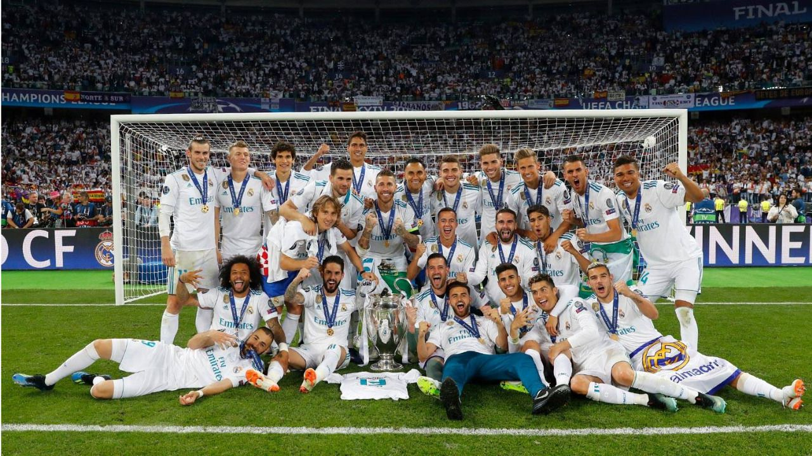
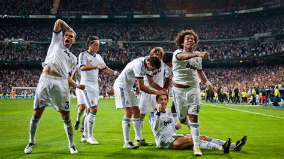
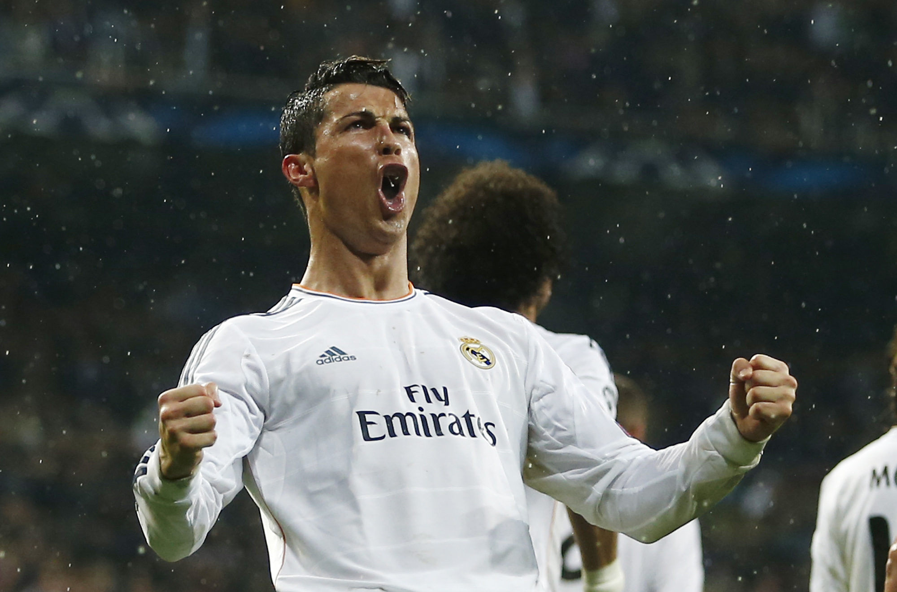

Su historia
El Real Madrid es él mejor equipo de futbol de la historia no solo por sus titulos, si no por todo lo que representa y todo lo que puede llegar a emocionar
Historia
El Real Madrid es un club de fútbol fundado en 1902 en Madrid, España. Su nombre original era Madrid Foot-ball Club y se cambió a Real Madrid Club de Fútbol en 1920, cuando el rey Alfonso XIII le otorgó el título de Real. El club ha sido uno de los más exitosos e icónicos en la historia del fútbol, ganando numerosos títulos nacionales e internacionales
A dia de hoy por lo que nos ha dado el futbol podemos decir que por este club han pasado los ejores jugadores del mundo como:.
Los mejores jugadores del R.M
- Alfredo Di Stefano
- Raul
- Cristiano Ronaldo 
- Y muchos otros mas que si te los digo estarias todo el dia en esta pagina